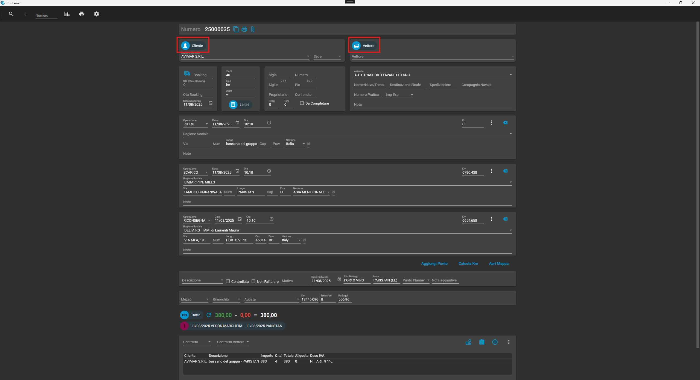
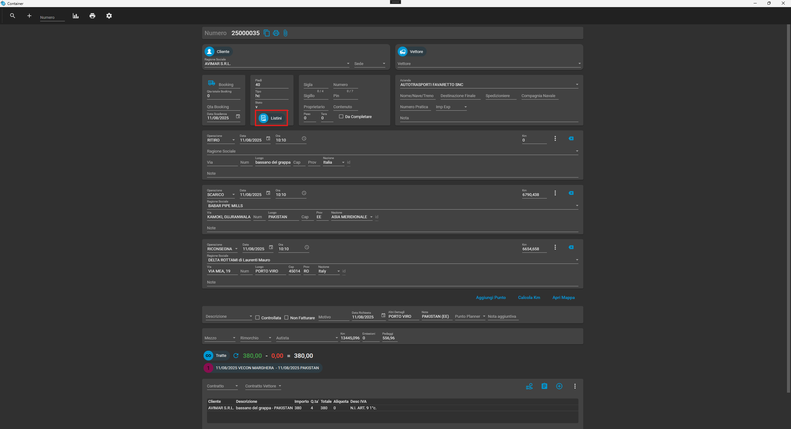
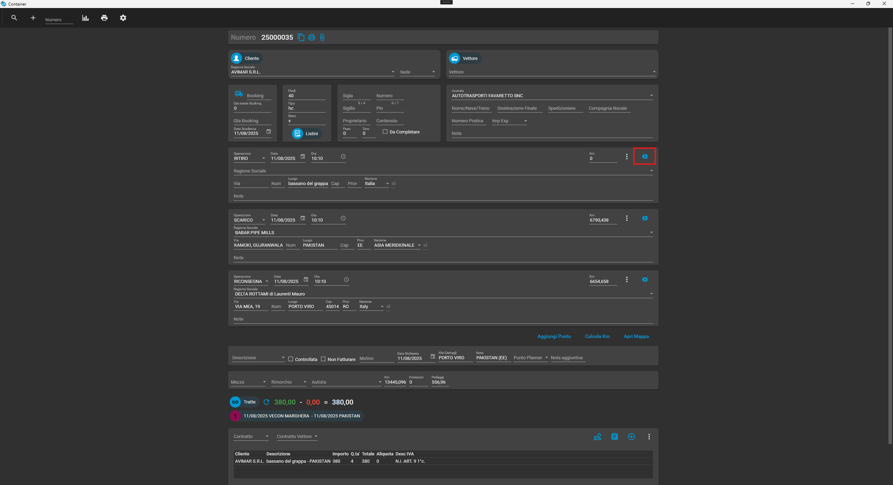
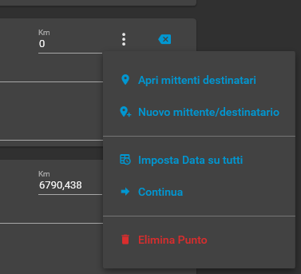
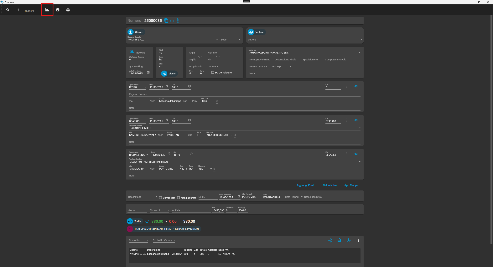
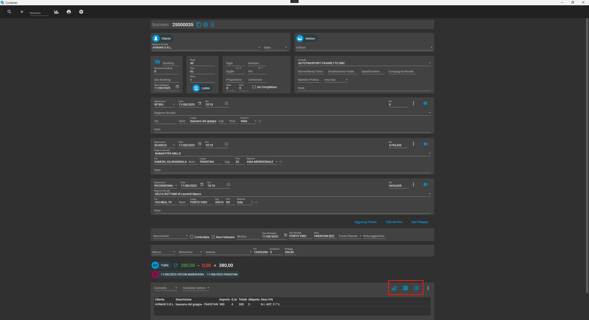
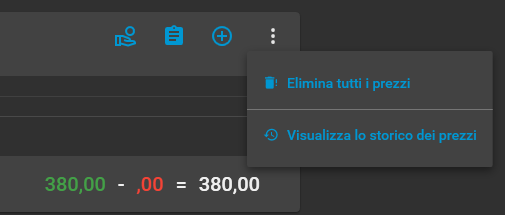

Cambiamenti nell'interfaccia
-
-
Anagrafica cliente vettore:
con questi pulsanti sarà possibile aprire la schermata
dell'anagrafica cliente/vettore.

-
Listini:
con questo pulsante sarà possibile accedere ai nuovi listini.

-
Svuota campi:
Con questo pulsante sarà possibile svuotare i campi del punto.

-
Opzioni aggiuntive punto:
-
Apri mittenti destinatari
Apre la schermata dei mittenti destinatari, mostra il mittente/destinatario selezionato
se presente in anagrafica
-
Nuovo mittente destinatario
Permette la creazione di un nuovo mittente/destinatario
-
Imposta data su tutti
Prende la data del punto e la imposta su tutti i punti restanti
-
Continua
A partire dal punto selezionato crea una nuova registrazione container che conterrà come
primo punto il punto selezionato
-
Elimina punto
Permette di eliminare il punto selezionato

-
Riprezzamento:
Con questo pulsante sarà possibile accedere alla schermata di riprezzamento dei containers,
permette di cambiare il prezzo dei containers in maniera massiva.
Non so come funzioni esattamente

-
Gestione costi:
In ordine abbiamo tre pulsanti:
-
Contrassegno:
-
Servizi accessori:
-
Aggiungi costo:

-
Impostazioni aggiuntive costi:
-
Elimina tutti i prezzi
Permette di eliminare tutti i prezzi dei containers
-
Visualizza lo storico dei prezzi:
Boh
